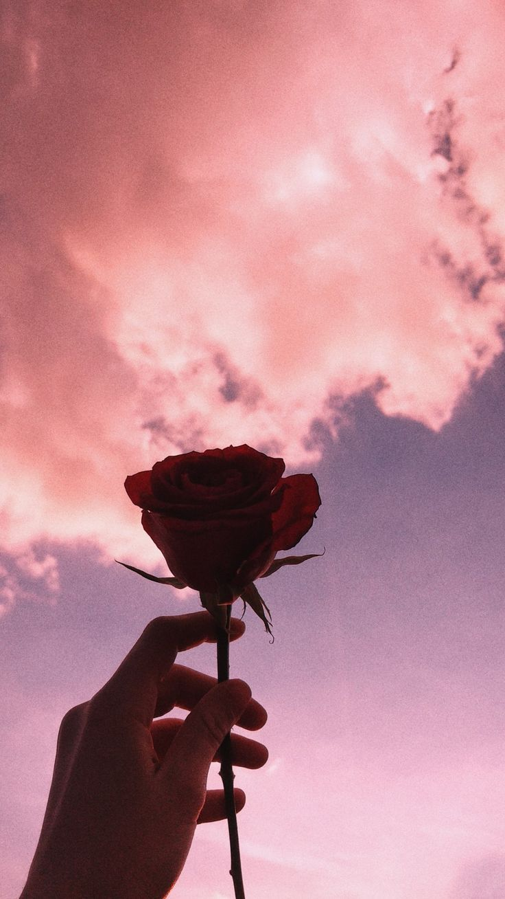
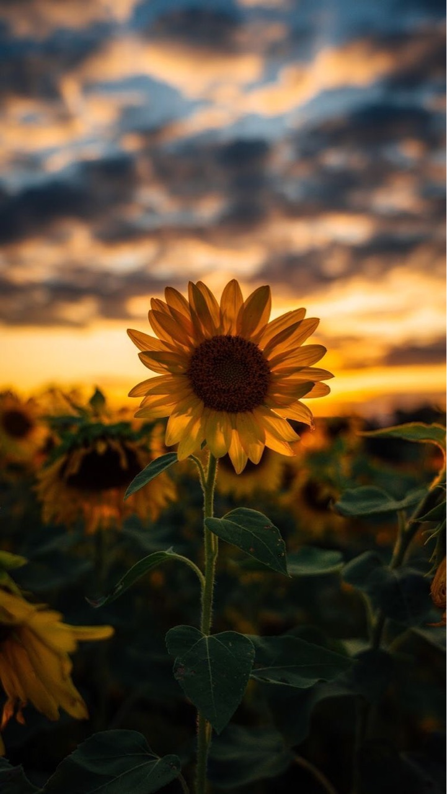
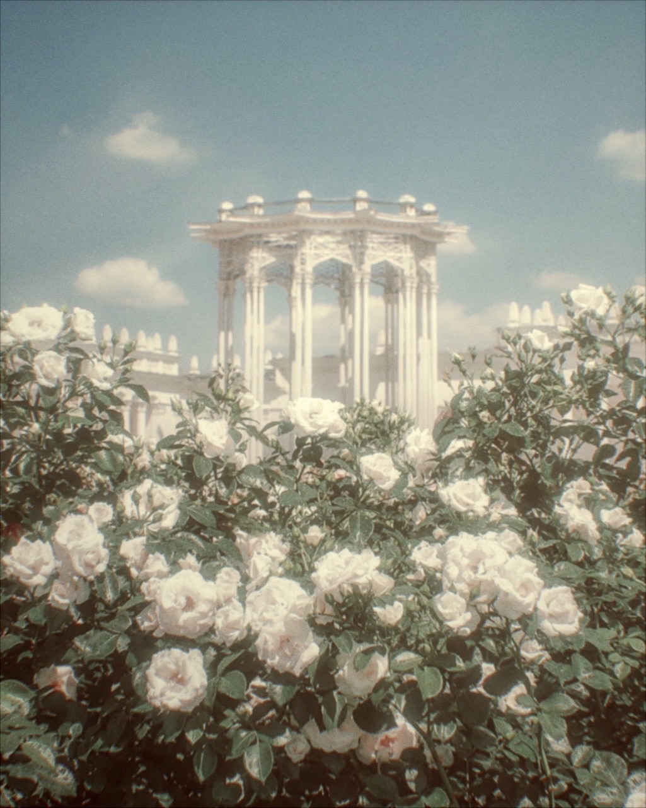
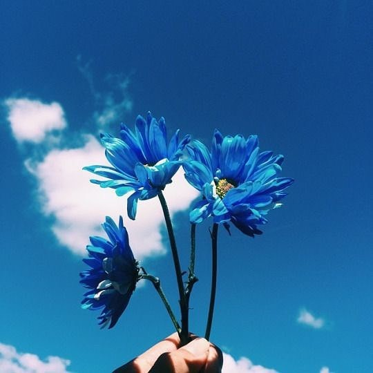
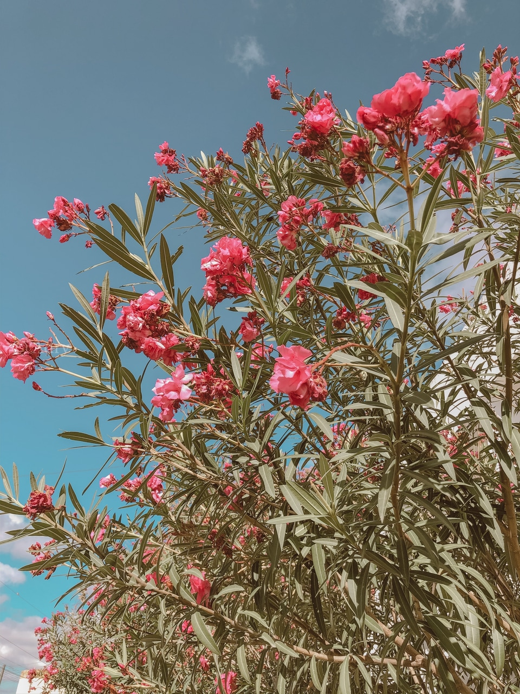
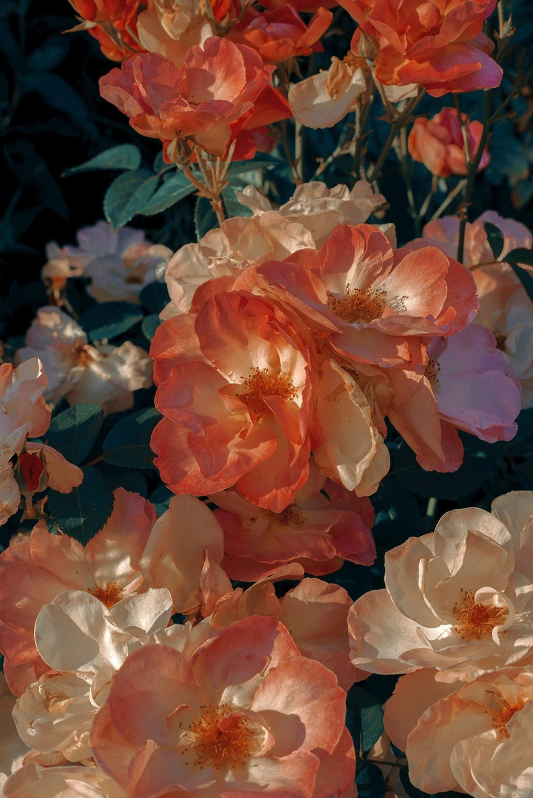
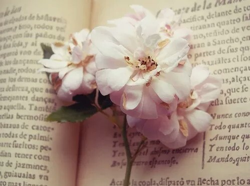
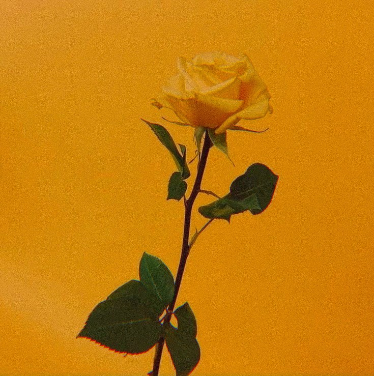
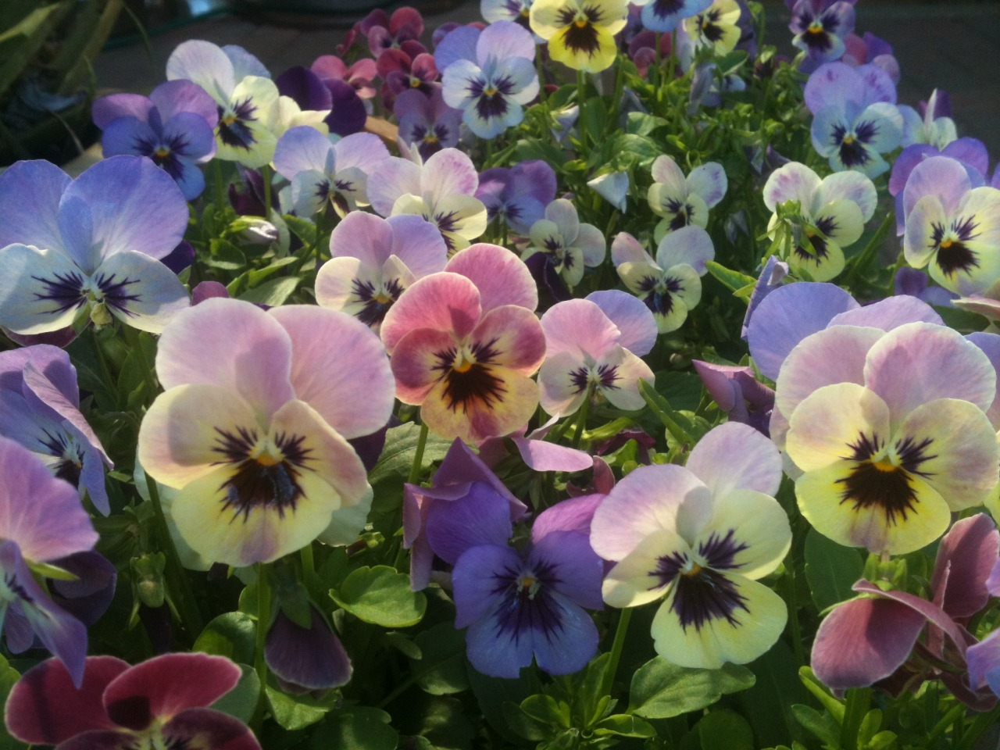
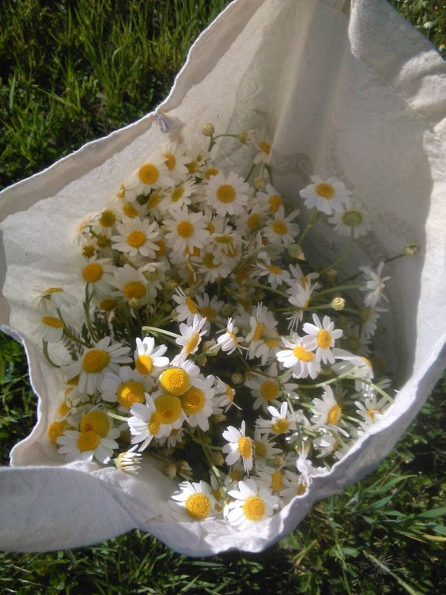
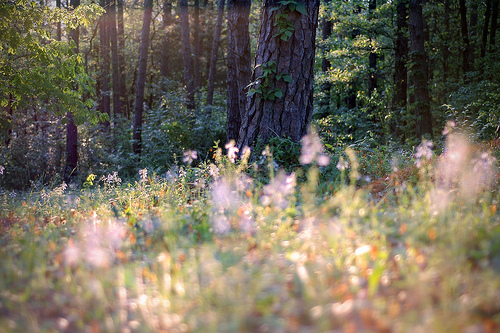
- Orchid
The orchids are one of the largest flowering plant family in the globe with over 25,000 well-established species. Almost everywhere on the earth, you can see this lovely plant. But each particular orchid species is unique that what makes orchids so special. Large and small orchids, short live and long live orchids are manifest. Besides these facts, the orchids ‘ special statutes and vivid colors are the most famous characteristics. Some orchid species look precisely like other characters, such as animals or plants. In the amazing look of orchids, bright colors also play a big part. In different colors white, in pink, yellow, red, and purple colors, each floral orchid cone.
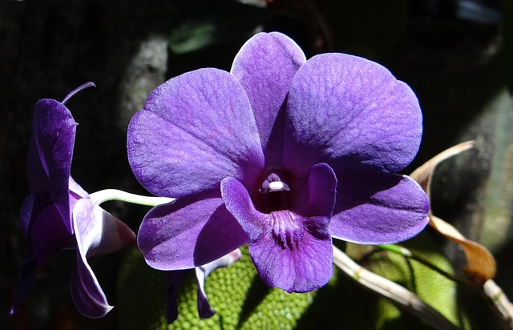
- Tulips
You must have heard of the garden Keukenhof flower (Garden of Europe, ) as a wonderful floral collector. This big garden is situated in the Netherlands and covers an extensive area of 32 hectares. Every spring, millions of tulips bloom grown in this garden. Imagine standing between these enormous tulip flowers fields. You certainly would feel like Paradise. Because tulip is such a lovely flora that can attract your attention immediately. Over 3000 tulip varieties of 150 separate species worldwide are present. This variety makes it one of the world’s most famous and grown flowers.
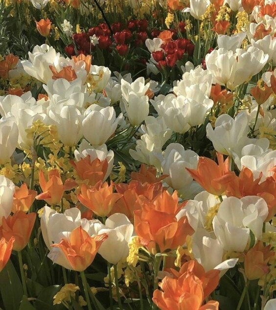
- Chrysanthemum
The chrysanthemum was originating in China where it was grown since the 15th century BC. They have many medicinal properties and they are also used as herbal remedies, and their flowers are not only lovely with the densely layered petals and a broad range of colors. But, Because of their long and rich history, the meanings of chrysanthemum are deeply symbolic and used to interact: love and emotion, allegiance and wishful thinking.
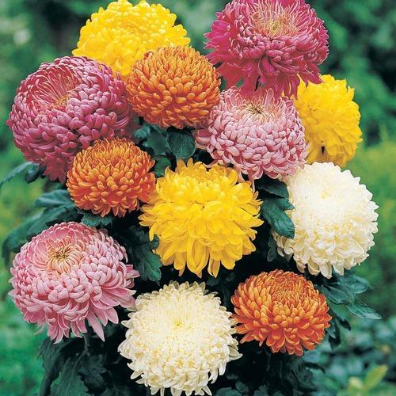
- Peony
Because of their beauty and fragrance, peonies are one of the most loved flowers in this world. They originate in China and are well known as the “King of flowers.” Peony is an extremely elegant flower that has densely packed petals which progressively open up from layer to layer over time. They come in a broad range of colors, from pastel pinks and whites to bright and audible greens and magentas, and are one of the most famous flowers in marriage designs.
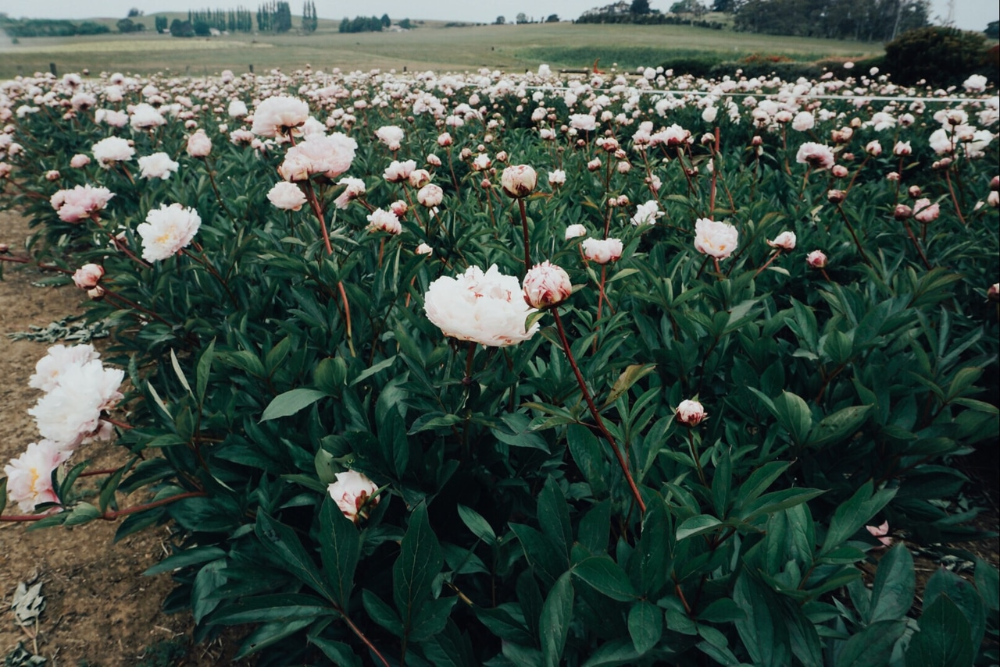
- Rose
- Cherry Blossom
Cherry blooms are one of the best flowers in the nature. The cherry tree (Prunus serrulata) erupts in the spring into purple clouds made up of small flowerings. The Cherry Blossom Festival occurs each year in Japan, where visitors Around the globe watch these amazing trees. In 1912 the Mayor of Tokyo donated 3,000 cherry blossoms to the United States to strengthen links between the two nations. The United States has an annual festival of cherry blossoms held in Washington, DC and is commemorated as the annual celebration.
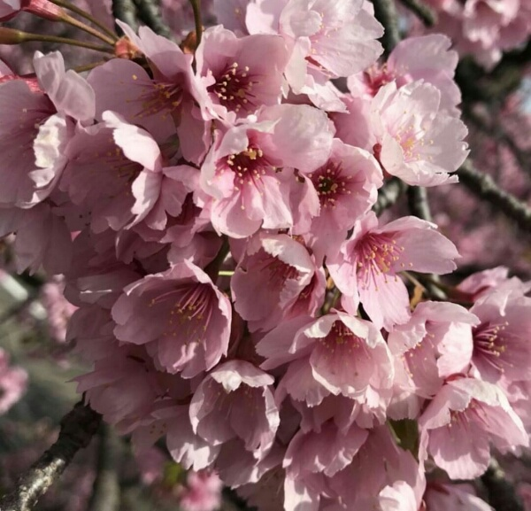
- Lotus
The lotus is a water plant known as the Nelumbo nucifera that produces big flowers. Originally from Asia, the plant grows from India and China widely. The lotus, which has various significance, is regarded as a extremely sacred flower in both Hinduism and Buddhism. They come in many beautiful colors, including pink, white and purple light, and dark. Lots can be up to a diameter of 20 cm. It’s completely round leaves also expand to a diameter of up to 60 cm. Besides beauty, lotuses are also famous for their nice scent.
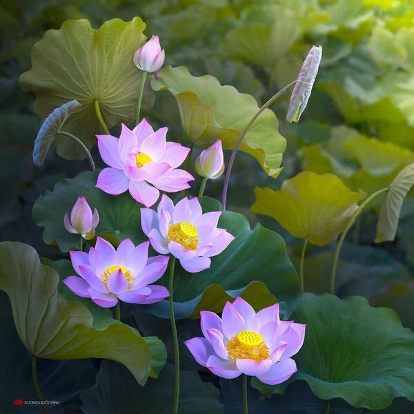
- Anemone
There are many anemone species, the most impressive one being Anemone Coronaria, an originally Mediterranean species. Its name is also known as windflowers and derives from the Greek word “anemos” meaning wind. The falling flowering varieties are larger with cup-shaped flowering, while the flowering varieties of the spring grow smaller. They grow in various colors, rosé, red, purple and white.
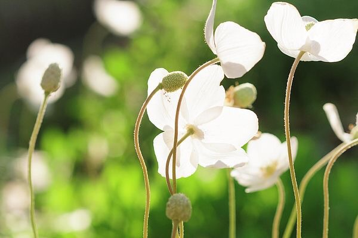
- Dahlia
Among the enthusiasts of flowers Dahlia was always so unique. The reason for this is its wide range of color and size. The world has 42 distinct dahlia species. These wonderful flowers range from 2 to 20 inches in diameter in both small and large dimensions. Dahlia can also be discovered in nearly every color, except blue. Dahlia’s a Mexican Origin. But it’s now wildly grown. Between mid-summer and first winter the amazingly colorful flowers bloom. You must cut the stem after the first flowers fade away in order to encourage blooming.
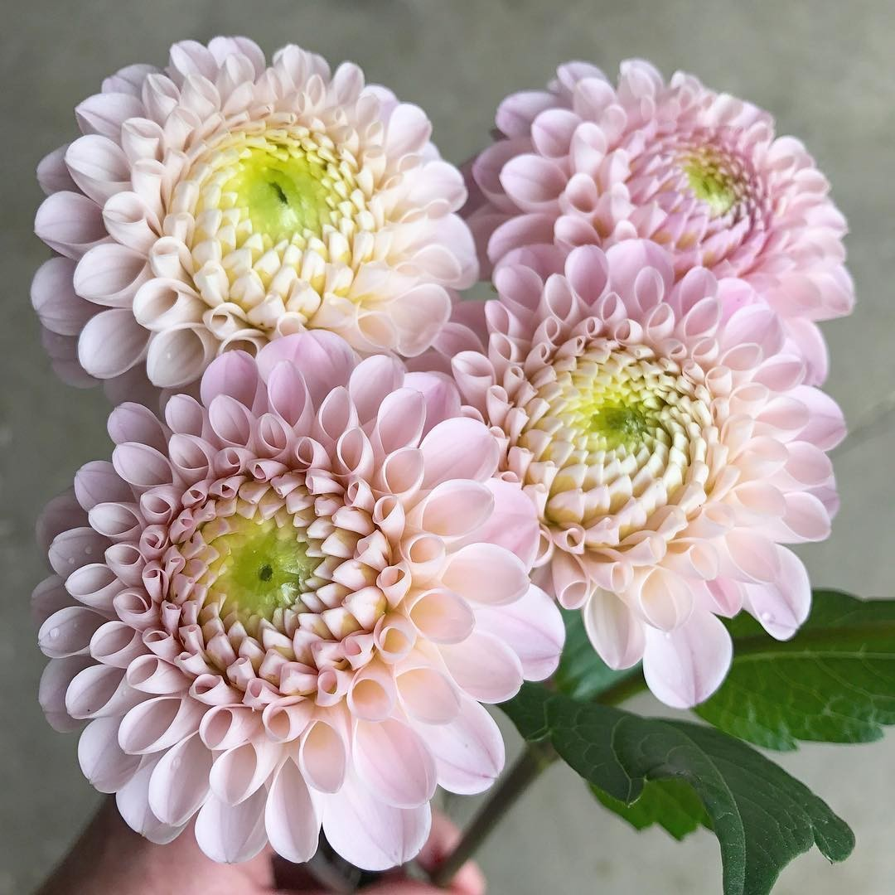
- Magnolia
In the Magnolioideae subfamily, Magnoliae is a large genus of approximately 210 florae plant species. It was named after Pierre Magnol, a French botanist. Magnolia is an old kind. In the south of the United States this tree grows wild and is Mississipi’s official state flowers. It produces big creamy white blooms, up to 15 inches wide, which achieve amazing sizes. The magnolia flowers have a brief lifetime and can last only for a few days, as they are so nice in fragrance.
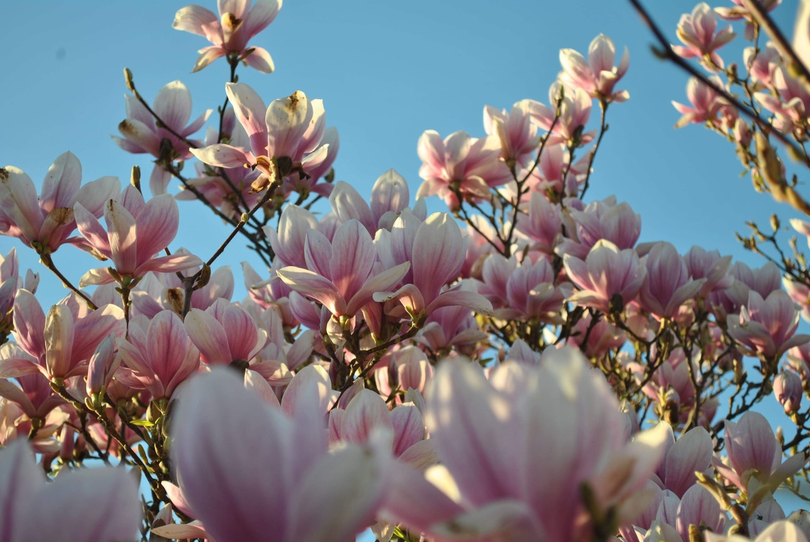